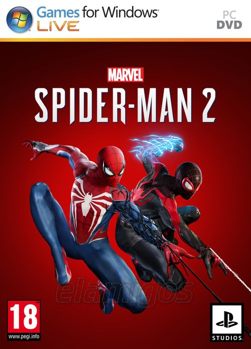

Marvel Spiderman 2 91.0 GB
Género: Acción, Mundo abierto, Parkour
Vuelven los dos Spider-Man, Peter Parker y Miles Morales, para una nueva y
emocionante aventura en la aclamada franquicia de Marvel's Spider-Man.
Balancéate, salta y usa las nuevas alarañas para recorrer la Nueva York de
Marvel, cambia rápidamente entre Peter Parker y Miles Morales para
experimentar historias diferentes y nuevos poderes épicos, y haz frente al
icónico villano Venom que amenaza con destruir sus vidas, su ciudad y a sus
seres queridos.